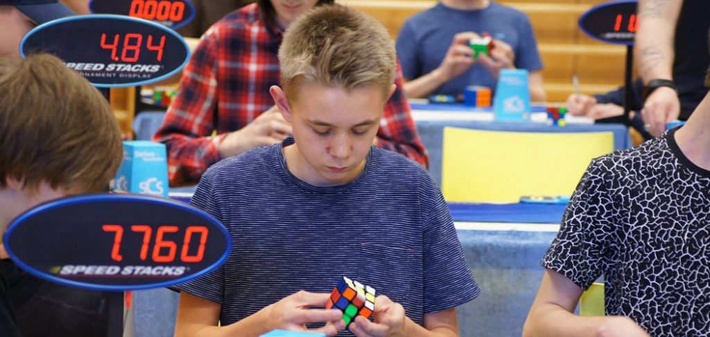

Speedcubing Portfolio

I'm a passionate and dedicated speedcuber with over 8 years of experience solving puzzles at competitive events. My journey in cubing has been full of challenges and I've participated in several speedcubing events. In addition to competing, I enjoy helping others learn the methods and skills needed to solve the Rubik's Cube and other puzzles
Oklahoma Fall 2019
- Event: Oklahoma Fall 2019 Speedcubing Competition
- Date: Fall 2019
- Puzzles: 3x3, 4x4, FMC
- Result: Competed in multiple events, improving my 3x3 time significantly to 8.46 seconds.
- Description: This was one of my biggest major competitions. I focused on improving my solving time for 3x3 and experimenting with different algorithms for larger cubes. This event was a great opportunity to meet other cubers and learn new techniques.
Tennessee Rocky Top 2018
- Event: Tennessee Rocky Top 2018
- Date: 2018
- Location: Tennessee
- Puzzle: 3x3
- Result: Top 20 finish in 3x3.
- Description: At Rocky Top 2018, I was able to push my personal best time down to just under 12 seconds. This event was exciting since I had the chance to compete against some of the fastest cubers in the country. It was an enjoyable event in my cubing journey, as I began to make new friends at .
Kansas City Krazy Cubing 2022
- Event: Kansas City Krazy Cubing 2022
- Date: 2022
- Location: Kansas City, Missouri. First church of Nazarene venue
- Puzzle: 3x3, 4x4, 5x5, 6x6, 7x7, Pyraminx, Megaminx, Square 1, Blindfolded 3x3, One-handed 3x3, Clock
- Result: Top 4 finish in 3x3 and Pyraminx
- Description: Easily the most eventful tournament I have gone to. I managed to get in the top 5 of the fastest solves in the tournament for the 3x3 and Pyraminx which are my best puzzles. I messed up my average time by messing up a few times, but I still made it high. This is my favorite event so far.
Additional Projects
- Since 2022, I began tutoring and helping new cubers that came to the Kansas tournments/events. Over the years, I gained enough confidence and experience to help out other cubers and I found that it is something I am also passionate about. I gave advice on finger placement, new algorithms, and confidence.
- I kept in touch with many of the people I helped through social media where I saw a lot progress in shortening their times.
Personal records at tournaments
- Fastest 3x3 solve: 6.98 seconds
- Fastest 4x4 solve: 22.58 seconds
- Best FMC Solve: 30 moves
- Fastest Skewb solve: 1 second
- Fastest Pyraminx solve: 1.8 seconds